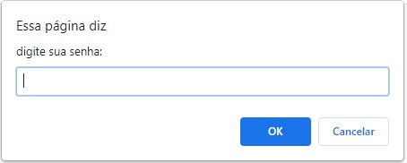
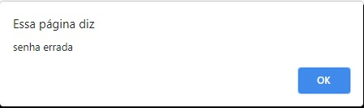

Manual de instruções:
1. Descobrindo a senha:
Sua missão é reunir as informações disponíveis e descobrir a senha, a fim de passar para o próximo enigma.
1.1) Reunindo informações:
Todas as informações necessárias poderão ser obtidas a partir da guia do enigma em questão.
Elas podem estar em diversas formas, das quais as principais são:
- Textos;
- Imagens;
- Vídeos;
- Links externos;
- Áudios;
- Nome da guia.
Vale ressaltar que estas não são as únicas formas, apenas as principais.
1.2) Utilizando as informações:
Na maioria das vezes será necessário fazer algo com as informações.
Alguns exemplos são:
- Relacionar as informações;
- Pesquisar na internet o significado de determinado termo;
- Traduzir textos em outros idiomas;
- Descobrir nome de obras;
Vale ressaltar que estes não são os únicos jeitos de descobrir a senha e que as ferramentas necessárias estão listadas neste tutorial, no próximo tópico.
1.3) Ferramentas externas necessárias:
Todas as ferramentas listadas estão disponíveis on-line, são gratuitas, não requerem conhecimento prévio sobre como utilizá-las, podendo ser aprendidas com facilidade, e são apenas sugestões.
- Edição de imagem:
- Photoshop Online - https://www.photoshoponline.net.br/editor
- Pixler - https://pixlr.com/br/
- Ferramentas de busca:
- Google
- Microsoft Edge
- Tradução de idiomas:
- Google Tradutor - https://translate.google.com.br/?hl=pt-BR&sl=pt&tl=en&op=translate
- Decodificação:
Para converter um código, basta pesquisar "conversor (nome do código)".
Alguns exemplos são:
- Binário - https://www.invertexto.com/codigo-binario
- Código morse - https://www.invertexto.com/codigo-morse
- Ferramentas de busca:
- Google
- Microsoft Edge
- Tradução de idiomas:
- Google Tradutor - https://translate.google.com.br/?hl=pt-BR&sl=pt&tl=en&op=translate
- Ferramentas de localização:
- Google Maps
2. Inserindo a senha:
Ao descobrir a senha, é necessário verificar se ela está correta, para assim passar para a próxima fase. Siga os seguintes passos:
- Clique no espaço "Inserir senha". Isso te levará para uma nova guia.
- Nesta nova guia, uma janela aparecerá:

Atenção! A partir deste ponto se você trocar de aba o processo de verificação de senha será interrompido.
- Digite a senha no espaço indicado.
- Caso a senha esteja correta, o processo de verificação estará encerrado e você passará para o próximo enigma, que estará em uma guia diferente do enigma anterior.
Caso ela esteja errada, você receberá esta mensagem:

- Ao clicar no "ok", uma aba com a seguinte mensagem aparecerá:
Senha incorreta
Feche esta aba e tente novamente.
- Feche a aba e retorne para a guia na qual está o enigma..
- Para tentar novamente, repita os passos listados acima.
- Ao passar de enigma, sugerimos fechar a aba do enigma anterior. Entretanto, recomendamos manter a página inicial sempre aberta, a fim de sempre poder consultar informações importantes, como este manual de instruções.
3. Formatação da senha:
Para a senha ser aceita, deve seguir os seguintes requisitos:
Todos os caracteres devem ser minúsculos;
Ex. "dante"
Ex. incorreto: "Dante", "DANTE" ou "dANte" As palavras não devem conter acentos ou sinais gráficos;
Ex. "comedia"
Ex. incorreto: "comédia" Se a senha conter mais de uma palavra é necessário colocar apenas um espaçamento entre cada palavra.
Ex. "inferno de dante"
Ex. incorreto: "infernodedante" ou "inferno de dante"Ao digitar a senha, não é permitido colocar espacamento antes da primeira palavra;
Ex. "virgilio"
Ex. incorreto: " virgilio"Caso a senha contenha um número, ele deve ser digitado por extenso. Também se aplica a números oridinais.
Ex. "nove circulos" ou "nono circulo"
Ex. incorreto: "9 circulos" ou "9º circulo"Caso haja mais de uma palavra, a senha não deve conter pontuação;
Ex. "olha deus para ti o estou fazendo"
Ex. incorreto: "olha, deus, para ti o estou fazendo!"
Dica: caso a senha não for aceita, confira se ela segue as regras citadas acima. Também recomendamos tentar inseri-la mais uma vez, para evitar erros de digitação.